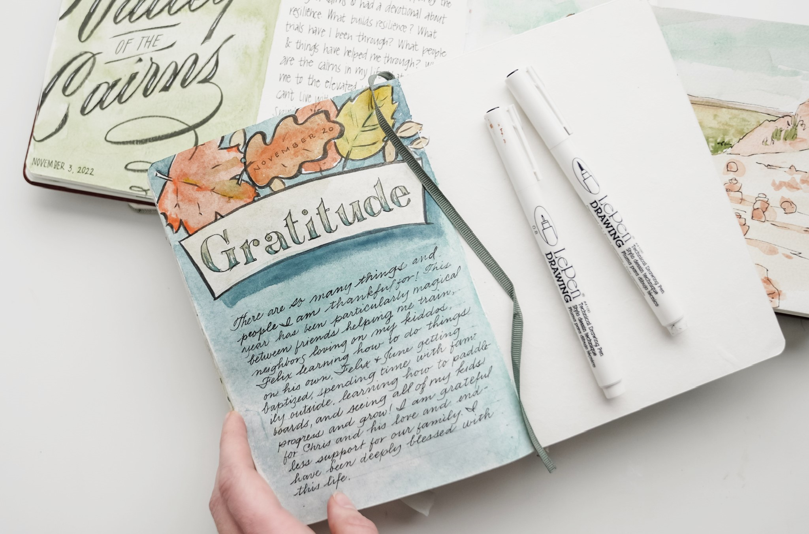

Introduction
Inspired by a class activity we did a while ago, I decided to use ChatGPT to learn a new skill. I’ve always wanted to take up journaling as a hobby and expand it to anything artistic — photography, poem writing, and even book analysis. I’ve often struggled to stay consistent with journaling, either because I overthink what to write or feel unsure how to structure my reflections. This time, I wanted to approach it differently.
I wanted ChatGPT to act almost like a creative guide — helping me brainstorm prompts, organize my thoughts, and connect journaling with other artistic practices. In a sense, I wanted to see how artificial intelligence could support a deeply human activity: self-expression.
Thus, this is the prompt I decided to ask ChatGPT: “I want to take up journaling as a hobby. Can you help me?”
Initial Responses / Set Up
That’s a great idea, Emily — journaling can be both grounding and creatively fulfilling. I’d love to help you get started. To tailor some guidance, can you tell me a bit about what kind of journaling you’re interested in? For instance:
- Reflective journaling (processing thoughts, emotions, or daily life)
- Creative journaling (story ideas, poetry, sketches, etc.)
- Academic or reading journal (tracking insights from books or classes)
- Gratitude or goal-setting journal
- Hybrid (a mix of everything)
Once I know your goals, I can suggest:
- What type of journal or app to use
- Starter prompts that fit your style
- A routine that’s easy to maintain
- Creative layouts or methods (like collage, color-coding, or themed entries)
Which direction are you leaning toward?
I chose both reflective and creative journaling. ChatGPT then gave me this response:
Perfect choice — combining reflective and creative journaling gives you the best of both worlds: space to process your thoughts and room to experiment with storytelling, imagery, or aesthetic expression. Let’s build a setup and routine that works for both sides of you.
🌙 Step 1: Choose Your Format
You can use either:
- Physical journal – Great for free-flowing handwriting, doodles, or pasted mementos. Look for something with thick pages and no rigid structure.
- Digital journal – Good if you want to include photos, mood boards, or typed reflections. Apps like Notion, Obsidian, Day One, or even Google Docs work well.
Would you prefer analog or digital (or a mix)?
✏️ Step 2: Structure Your Entries
Try dividing each entry into two parts:
Reflective section – a safe space to process emotions, recap your day, or explore thoughts.
Prompts:
- “Today, I noticed myself feeling ___ when ___.”
- “Something that challenged me today was…”
- “What am I grateful for right now?”
- “If I could pause time right now, what would I want to hold onto?”
Creative section – where you can let your imagination out.
Prompts:
- “Describe a moment from today as if it were a scene in a film.”
- “Invent a dialogue between two moods I felt today.”
- “Write a short poem that captures how this week felt.”
- “Turn a passing thought into a metaphor.”
You don’t have to do both every day — maybe alternate or combine depending on your mood.
⏰ Step 3: Set a Manageable Routine
Start small — for example:
- 10 minutes before bed
- 2–3 entries per week
- Keep your journal somewhere visible (or schedule a digital reminder)
Consistency matters more than perfection.
🎨 Step 4: Add a Creative Touch
Make journaling feel like an art practice:
- Use washi tape, pressed flowers, or doodles.
- Create thematic pages (e.g., “September Moods” or “Scenes from Coffee Shops”).
- Use ink colors or small drawings to reflect emotions.
Would you like me to create a template or layout you could follow (like a weekly spread or sample page that blends reflective + creative journaling)?
I responded with online journaling and yes to the template.
Second Response
Excellent choice — digital journaling is flexible, private, and easy to personalize. Since you want to do both reflective and creative journaling, here’s a simple but elegant weekly template you can copy into Notion, Google Docs, or any journaling app you prefer.
🌿 Emily’s Reflective + Creative Journal Template
🗓 Week of [Month] [Date] – [Date]
💭 1. Reflection Section
Mood Check: 🌤 Today I feel: [one word or short phrase] ✨ Energy level: [high / medium / low] 🎵 Current soundtrack or vibe: [optional]
Daily Reflection Prompts (choose 1–3 per entry):
- What moment today lingered in my mind?
- What am I proud of handling well this week?
- When did I feel most at peace — or most alive?
- What small thing felt beautiful or surprising?
- If my thoughts had a color today, what would it be and why?
(You can respond in full sentences or quick bullet points — whichever fits your mood.)
🖋 2. Creative Section
Prompt of the Day (choose one or make your own):
- Describe your day as if it were a scene in a novel.
- Write a haiku about something you noticed.
- Turn a passing emotion into a metaphor.
- Imagine you’re writing a letter to your future self.
- Write a few lines of dialogue between your “past self” and “present self.”
You can also add:
- 🖼 A photo, doodle, or song lyric that matches the mood.
- ✨ A snippet of a dream, poem, or creative thought from the day.
📚 3. End-of-Week Reflection
- One word that sums up this week:
- Something I learned about myself:
- A creative idea I want to explore next:
- One thing I want to let go of:
- One thing I want to carry forward:
Final Thoughts
What stood out to me most was how naturally ChatGPT assumed the role of a guide rather than a director. It didn’t dictate how I should journal but instead provided a tentative structure and clear options that encouraged self-reflection.
I also noticed how ChatGPT’s suggestions took into account what I wanted: both practicality and artistry. While we know that ChatGPT has trouble with creativity and understanding/experiencing emotions, this interaction shows that ChatGPT functions best when used as a co-thinker. Through this collaboration, I learned that journaling — a hobby that is usually solitary — does not need to be done alone but instead can become a conversation that encourages us to keep writing! :)
I want to do a follow-up blog post on this. I’m not sure exactly what prompt I will use in the next blog post, so I will keep thinking.
Thanks for reading!
